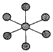

침투비파괴검사기능사 (2004-02-01 기출문제)
1과목: 침투탐상시험법(대략구분)
1. 공기중에서 초음파의 주파수가 5MHz일 때 물속에서의 종파의 파장은 ?(단, 물에서의 종파속도는 1500m/s이다.)
- 0.1mm
- 0.3mm
- 0.5mm
- 0.7mm
(정답률: 72%)

2. 다음 중 침투탐상시험으로 표면결함을 탐상할 수 없는 대상물은 ?
- 유리
- 목재
- 철강
- 플라스틱
(정답률: 86%)
3. 침투탐상시험에서 침투제와 혼합되어 수세가 가능토록 하는 물질은 ?
- 유화제
- 현상제
- 배액제
- 세척제
(정답률: 82%)
4. 침투탐상시험시 형광침투액보다 염색침투액의 가장 큰 장점은?
- 자외선등이 필요없다.
- 거친 표면에 아주 좋다.
- 표면처리된 곳에 사용할 수 있다.
- 작은 결함지시라도 보다 쉽게 잘 보인다.
(정답률: 67%)
5. 후유화성 침투탐상시험 과정에서 다음 중 허용되지 않는 경우는?
- 담금(dipping)에 의하여 유화제를 적용한다.
- 분무에 의해 현상제를 살포한다.
- 물을 사용하여 과잉침투제를 제거한다.
- 솔로 유화제를 바른다.
(정답률: 80%)
6. 침투탐상시험에 사용하는 재료나 설비는 사용함에 따라 신뢰성이 떨어진다. 신뢰성을 확보하는 적절한 방법은 ?
- 매 작업시마다 재료나 설비를 교체한다.
- 매 1년마다 재료나 설비를 교체한다.
- 일상점검 또는 일정기간 정기점검으로 관리한다.
- 별 문제가 되지 않으므로 계속 사용한다.
(정답률: 83%)
7. 다른 침투탐상시험에 비하여 후유화성 형광침투탐상시험의 장점이라고 볼 수 없는 것은 ?
- 극히 작은 불연속부에 민감하다.
- 침투력이 강하다.
- 거친 표면에 적합하다.
- 눈에 잘 보인다.
(정답률: 30%)
8. 침투탐상시험시 사용하는 현상제에 관한 설명중 틀린 것은 ?
- 흡수력이 있는 물질이어야 한다.
- 형광 물질이어야 한다.
- 독성이 없어야 한다.
- 시험편 표면에 얇고 균일한 막을 형성할 수 있어야 한다.
(정답률: 72%)
9. 침투탐상검사에 의해 얻어진 결함지시모양을 기록하는 방법으로 적당치 않은 것은 ?
- 사진
- 전사
- 스케치
- 주조
(정답률: 61%)
10. 후유화성 형광침투액과 건식현상제를 사용해 침투탐상검사를 할 경우 올바른 시험 절차는 ? (단, 관찰, 후처리과정은 생략하였음)
- 전처리→침투처리→세척처리→건조처리→현상처리
- 전처리→침투처리→유화처리→세척처리→건조처리→현상처리
- 전처리→침투처리→세척처리→유화처리→건조처리→현상처리
- 전처리→침투처리→유화처리→세척처리→현상처리→건조처리
(정답률: 46%)
11. 일반적으로 민감도가 다음 중 가장 좋은 현상제는 ?
- 무현상제
- 건식 현상제
- 습식 현상제
- 불활성 현상제
(정답률: 62%)
12. 침투탐상검사에서 다음 중 허위지시가 나타날 수 있는 가장 큰 조건은 ?
- 과잉세척
- 현상제의 부적절한 적용
- 침투제의 침투시 외부 조건이 너무 차가워서
- 부주의한 세척 및 오염
(정답률: 53%)
13. 침투탐상시험의 현상처리 방법이 아닌 것은 ?
- 건식현상법
- 습식현상법
- 속건식현상법
- 산성현상법
(정답률: 82%)
14. 다음 중 대량의 열쇠구멍이나 나사에 대하여 적합한 침투탐상시험법은 ?
- 용제제거성 형광침투탐상시험
- 수세성 형광침투탐상시험
- 후유화성 형광침투탐상시험
- 후유화성 염색침투탐상시험
(정답률: 66%)
15. 경우에 따라서 환경 등의 안전을 고려하여 침투탐상검사 시스템과 분리하여 설치해야 하는 장치는 ?
- 전처리장치
- 침투장치
- 유화장치
- 현상장치
(정답률: 42%)
16. 다음 중 방사선의 특성이 아닌 것은 ?
- 반사 작용
- 전리 작용
- 형광 작용
- 사진 작용
(정답률: 22%)
17. 침투탐상시험시 건조장치의 구비조건으로 다음 중 가장 필요한 것은 ?
- 타이머(Timer)가 부착되어야 한다.
- 온도 조절장치가 부가되어야 한다.
- 팬(Fan)이 부가되어야 한다.
- 항상 일정한 온도를 유지할 수 있는 릴레이가 부가되어야 한다.
(정답률: 60%)
18. 자외선등을 사용할 때 충분히 가열될 때까지는 전 기능을 발휘하지 못한다. 필요한 방전온도에 이르자면 최소 몇분의 가열시간이 지나야 하는가 ?
- 1 분
- 5 분
- 10 분
- 15 분
(정답률: 67%)
19. 다음 중 침투탐상시험의 특징으로 볼 수 없는 내용은 ?
- 비철재료, 도자기, 플라스틱 등의 표면결함 검출이 가능하다.
- 형태가 복잡한 시험체라도 한번의 탐상조작으로 거의 전 표면의 탐상이 가능하다.
- 큰 시험체의 탐상이 불가능하므로 작은 규모의 시험체만 적용한다.
- 시험체의 결함이 개구되어 있지 않으면 검출되지 않는다.
(정답률: 52%)
20. 다음 중 침투탐상시험으로 검사가 불가능한 시험체는 ?
- 주철(iron casting)
- 담금질한 알루미늄(aluminium forging)
- 다공성 물질로 된 부품
- 유리로 만들어진 물질로 된 부품
(정답률: 60%)
2과목: 침투탐상관련규격(대략구분)
21. 침투탐상시험시 과잉의 침투제를 제거시킬 때 필요한 시설은 ?
- 유화처리 시설
- 건조처리 시설
- 현상처리 시설
- 배액처리 시설
(정답률: 64%)
22. 침투탐상시험시 다음 중 의사지시가 생기는 원인이 아닌것은 ?
- 부적절한 세척을 했을 때
- 외부 물질에 의해 오염이 됐을 때
- 현상제에 침투액이 묻었을 때
- 방사선투과시험을 먼저 했을 때
(정답률: 96%)
23. 검사대상 시험체가 매우 커 이동이 어려울 때는 어떤 침투탐상 시험장치가 필요한가 ?
- 대형 장치
- 중형 장치
- 소형 장치
- 휴대용 장치
(정답률: 72%)
24. 다음 중 후유화성 침투액과 습식현상제를 사용할 때 알맞는 사용 방법은 ?
- 현상제 적용 후에 건조시킨다.
- 증기 세척후 도금을 벗겨야 한다.
- 유화제 적용 전에 과잉 침투액을 제거해야 한다.
- 현상제 적용 전에 건조시킨다.
(정답률: 45%)
25. 침투탐상시험시 현상제의 종류에 따라 다음 중 장소가 변경될 수 있는 조합은 ?
- 침투탱크, 현상탱크
- 현상탱크, 세척탱크
- 세척탱크, 검사대
- 건조기, 현상탱크
(정답률: 35%)
26. KS B 0816에서 A형 대비시험편 제조를 위하여는 판의 중앙부를 몇 도로 가열한 다음 냉수로 급냉해야 하는가?
- 520 - 530℃
- 210 - 310℃
- 440 - 450℃
- 700 - 800℃
(정답률: 48%)
27. KS W 0914에 따른 침투액의 적용 규정으로 맞는 것은?(오류 신고가 접수된 문제입니다. 반드시 정답과 해설을 확인하시기 바랍니다.)
- 특별히 지정하지 않는 한 시험부품 및 침투액의 온도는 4∼49℃이내이어야 한다.
- 침투액의 체류 시간은 최소 5분으로 한다.
- 침투액의 최대 체류 시간은 2시간으로 한다.
- 침투액을 침지법으로 적용해서는 안된다.
(정답률: 32%)
28. KS W 0914에서 수세성 침투제에 대한 수분함유량의 제한치는?(단, 방법 A의 침투액으로서 부피비를 나타냄)
- 1%
- 3%
- 5%
- 10%
(정답률: 54%)
29. KS 규격에서 침투처리시 침투액의 온도는 통상 어느 온도범위일 때 침투시간, 현상시간 등의 기준으로 정하는가?
- 10 ~ 25℃
- 15 ~ 40℃
- 15 ~ 50℃
- 20 ~ 55℃
(정답률: 66%)
30. KS B 0816에서 지시모양의 분류중 결함으로 볼 수 없는 것은?
- 선상 침투지시 모양
- 연속 침투지시 모양
- 재질 경계지시 모양
- 갈라짐에 의한 침투지시 모양
(정답률: 87%)
31. 다음 중 KS 규격에서 인정하는 현상방법이 아닌 것은?
- 건식현상
- 습식현상
- 속건식현상
- 속습식현상
(정답률: 85%)
32. KS B 0816의 B형 대비시험편에 대한 내용으로 맞는 것은?
- 시험편의 치수는 길이 100mm, 나비 60mm로 한다.
- 니켈도금과 크롬도금한 시험편에 균열을 만들고 길이방향으로 갈라지게 한 후 절단하여 이등분하여 사용한다.
- 시험편은 도금두께 및 도금갈라짐의 나비를 달리하여 총 6종으로 구성된다.
- 시험편 PT-B10의 도금두께 및 도금갈라짐의 나비는 각각 10㎛ 및 0.5㎛이다.
(정답률: 50%)
33. KS B 0816에 의한 잉여침투액 제거방법 중 물베이스 유화제를 사용하는 분류방법은?
- A
- B
- C
- D
(정답률: 69%)
34. KS W 0914에 따른 침투탐상 검사방법을 설명한 것이다. 틀린 것은?
- 레벨Ⅰ의 검사원이 탐상 공정을 담당할 경우에는 레벨Ⅱ 이상의 검사원의 직접 감독 또는 감시 하에서 하여야 한다.
- 타입Ⅱ의 침투탐상 검사는 동일면에 대하여는 타입Ⅰ의 침투탐상검사 전에 사용해도 된다.
- 체류시간(dwell time)이란 침투액, 유화제, 제거제 또는 현상제가 구성 부품과 접촉하고 있는 총경과 시간을 말한다.
- 자외선조사장치는 근자외선 파장 범위(320∼400nm)의 전자파를 방사하는 조사장치를 말한다.
(정답률: 60%)
35. KS W 0914에서는 ( ) 및 비금속제 항공우주기기용 구성 부품에 대하여 침투탐상검사를 하는 경우의 최소한의 요구사항을 규정하고 있다. ( )안에 알맞는 용어는?
- 다공질 금속
- 단조품
- 주조품
- 비다공질 금속
(정답률: 16%)
36. KS B 0816에서 규정한 B형 대비시험편의 재질은?
- 알루미늄 및 알루미늄 합금판
- 동 및 동합금판
- 용접구조용 압연 강재
- 고탄소, 크롬 베어링 강재
(정답률: 55%)
37. KS B 0816에 따른 기호 FB-W의 시험절차로 맞는 것은 ?
- 침투→ 전처리→ 유화→ 물세척→ 건조→ 습식현상
- 전처리→ 침투→ 유화→ 물세척→ 습식현상→ 건조
- 전처리→ 침투→ 유화→ 물세척→ 건조→ 습식현상
- 전처리→ 침투→ 물세척→ 유화→ 습식현상→ 건조
(정답률: 53%)
38. KS B 0816에서 현상제를 적용하는 일반적인 방법으로 맞는 것은?
- 건식현상은 표면을 균일하게 덮은 후 일정시간 유지한다.
- 건식현상제는 스프레이 건으로 균일하게 도포한다.
- 습식현상제는 침적하여 일정시간 까지 유지한다.
- 속건식현상제는 붓칠하여도 되지만 균일하게 한다.
(정답률: 35%)
39. KS B 0816에서 시험종료 후 시험품의 표면에 부착되어 있는 현상제를 제거해야 하는 주된 이유는?
- 시험체를 부식시킬 우려가 있어서
- 침투탐상 후의 후속공정에 영향을 줄 수 있어서
- 시간이 경과하면 시험체 표면에 단단하게 부착되므로
- 침투제를 오염시키기 때문에
(정답률: 50%)
40. KS B 0816에서 검사를 한 후에 나타난 지시를 기록하는 방법이 아닌 것은?
- 사진
- 스케치
- 전사
- 에칭
(정답률: 54%)
3과목: 금속재료일반 및 용접일반(대략구분)
41. 디지털 신호를 전화선을 통하여 직접 전달될 수 있도록 아날로그 신호로 바꾸어 주고, 전화선을 통해 전송된 아날로그 신호를 디지털 신호로 바꾸어 주는 장치는?
- 프로토콜(protocol)
- 에뮬레이터(emulator)
- RS-232C
- 모뎀(modem)
(정답률: 46%)
42. 팬티엄Ⅱ 프로세서에서 가격을 낮추기 위해 L2캐시(외부캐시)를 제외시킨 프로세서는?
- MMX
- EDO
- CELERON
- 팬티엄Ⅲ
(정답률: 19%)
43. 데이터 통신 시스템을 이용해서 개인용 컴퓨터 사용자들이 공지사항들을 접할 수 있는 방법은?
- 전자 금전 결재
- 전자 자료 교환
- 전자 게시판
- 재택 근무
(정답률: 74%)
44. 컴퓨터 네트워크 구성형태 중 그림과 같이 중앙에 메인컴퓨터를 두고 단말기들이 연결된 토폴로지(topology)는?

- 성형(star)
- 버스(bus)
- 망형(mesh)
- 트리(tree)
(정답률: 36%)
45. 다음 도메인 이름 중에서 기관분류가 교육기관에 속한 사이트의 이름은?
- ddd.univ.co.kr.
- db.ccc.re.kr
- aaa.bbb.ac.kr
- ftp.univ.go.kr
(정답률: 15%)
46. 금속에서 소성변형이 일어나는 원인과 관련이 가장 깊은 것은?
- 비중
- 비열
- 경도
- 슬립
(정답률: 40%)
47. 비중이 알루미늄의 약 2/3 정도이고 산화가 일어나는 금속은?
- Mg
- Cu
- Fe
- Au
(정답률: 77%)
48. 금속의 결정 격자에서 단위포의 길이 단위는?
- m
- Å
- ㎜
- inch
(정답률: 21%)
49. 침입형 고용체가 될수 없는 원소는?
- B
- N
- Cu
- H
(정답률: 34%)
50. 순철에 가장 가까운 것은?
- 공정철
- 림드철
- 가단주철
- 전해철
(정답률: 24%)
51. Fe-C 계 평형상태도에서 주철의 탄소 함유량(%)은?
- 0.02 ∼ 0.5
- 0.6 ∼ 1.5
- 2.00 ∼ 6.67
- 6.67 이상
(정답률: 58%)
52. 면심 입방격자인 Ni 의 자기변태 온도(℃)는?
- 약 1160
- 약 910
- 약 768
- 약 358
(정답률: 5%)
53. 탄소강에서 나타나는 상온메짐의 원인이 되는 주 원소는?
- 인
- 황
- 망간
- 규소
(정답률: 29%)
54. 내열강의 주성분이 될 수 없는 것은?
- Cr
- Ni
- Si
- S
(정답률: 60%)
55. 600℃ 에서 6:4 황동(muntz metal)의 평형상태도 조직은?
- α + β
- β + r
- β
- α
(정답률: 67%)
56. 구리와 아연의 합금은?
- 산소동
- 탈산동
- 황동
- 청동
(정답률: 76%)
57. 내열강으로 요구되는 성질이 아닌 것은?
- 고온에서 침식과 산화가 잘 될 것
- 고온도가 되어도 외력에 의해 변형하지 않을 것
- 조직이 안정되어 있어 급냉에 견딜 것
- 가공성이 좋을 것
(정답률: 69%)
58. 내용적 50ℓ 산소용기의 고압력계가 150기압일 때 프랑스식 250번 팁으로 사용압력 1기압에서 혼합비 1:1을 사용하면 몇시간 작업할 수 있는가 ?
- 20 시간
- 30 시간
- 40 시간
- 50 시간
(정답률: 57%)
59. 다음 잔류응력 제거방법 중 효과가 가장 크며 전제품을 가열한 후 냉각하는 것은?
- 국부 풀림법
- 기계적 응력 완화법
- 노내 풀림법
- 저온 응력 완화법
(정답률: 30%)
60. 다음 중 직류 정극성에 속하는 모재와 용접봉의 극성은?
- 모재(+), 용접봉(-)
- 모재(-), 용접봉(+)
- 모재(+), 용접봉(+)
- 모재(-), 용접봉(-)
(정답률: 44%)
파장 = 종파속도 / 주파수
= 1500m/s / 5MHz
= 0.0003m
= 0.3mm
따라서, 물속에서의 종파의 파장은 0.3mm입니다.